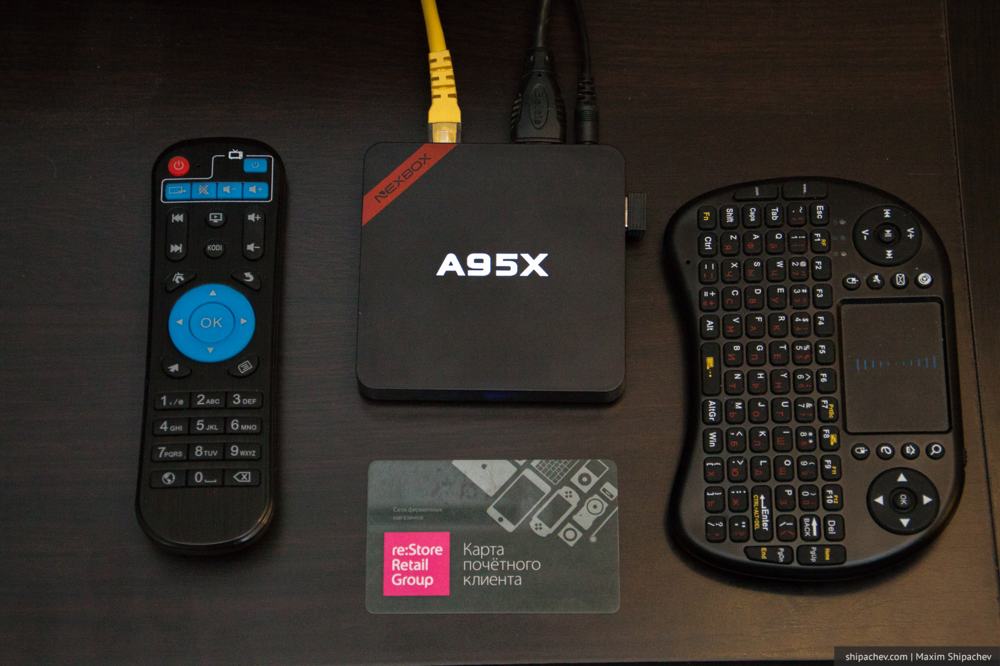

Всё больше телевизоров в наших квартирах по своим функциям приближаются к компьютерам, а точнее к планшетам. Они «умеют» выходить в интернет, показывать на фильмы из сетевых библиотек, ролики с Youtube.
На них можно запустить Skype, посмотреть фотографии с флешки или телефона, поиграть в игры. Правда всё это актуально для телевизоров с функцией SmartTV, то есть оснащённых операционной системой, позволяющей устанавливать приложения. Как правило, это Android.
Сделать старый телевизор «умным», к счастью тоже не очень сложно. Для этого необходимо устройство, которое называют медиаплеер.
Первые медиаплееры появились достаточно давно, и их ассортимент сегодня очень широк. Они отличаются как набором функций, так и ценой. На сегодняшний день цена самого дешёвого из них в магазине DNS составляет 1750 рублей, самого дорогого, Apple TV, 12999 рублей.
Много лет мы использовали Dune HD TV–101, недорогой медиаплеер с подключением к локальной сети, с 256 мегабайтами оперативной памяти. Его хватало, чтобы посмотреть фильмы или фотографии с домашнего медиасервера. Он поддерживал все нужные форматы фото и видео, в том числе MKV, и субтитры.
Мы бы до сих пор мирились с его неспешностью, если бы со временем у него не стал отказывать пульт. На нажатие кнопок на пульте медиаплеер реагировал всё хуже, чтобы поставить на паузу фильм нужно было просто со всей силы нажимать на них. Разбор и чистка кнопок не помогала. В семье со временем стал справляться с этим только я, пока, нажимая, не сломал корпус пульта пополам. Я уже давно собирался обновить медиаплеер, и распродажа на Aliexpress 11 ноября пришлась кстати.
Технология выбора из нескольких сотен медиаплееров, представленных в магазине, у меня была простая. Я зашёл в раздел, отсортировал медиаплееры по количеству заказов, и выбрал самый популярный. Им оказался NEXBOX A95X.

Краткие характеристики NEXBOX A95X
- Операционная система: Android 6.0 (самая современная на сегодняшний день)
- Оперативная память: 2 гигабайта
- WiFi
- Bluetooth 4.0
- Постоянная память: 16 гигабайт
- в комплекте пульт дистанционного управления и русская беспроводная клавиатура Весь набор обошёлся в 3099 рублей с учётом распродажной цены. Медиаплеер был доставлен в течение 20 дней и успешно работает уже месяц.
Достоинства Nexbox A95X
- Цена. Самый дорогой, исключая Apple TV, плеер в DNS сегодня стоит 9500 рублей, это Rombica Cinema 4K v01. В нём в два раза меньше постоянной памяти, в два раза меньше оперативной, Android версии 4.4, в комплекте нет беспроводной клавиатуры.
- Android. В отличие от медиаплееров со своей операционной системой, вы можете установить на Nexbox A95X любые приложения из Google Playmarket. Angry Birds, Вконтакте, Яндекс.Погода — сотни приложений на любой вкус.
- Размеры. Медиаплеер, несмотря на внушительное оснащение миниатюрен, отсутствие вынесенных антенн WiFi тоже расцениваю скорее как плюс.
- Клавиатура к комплекте. Она беспроводная, с русскими буквами и тачпадом. Если вы смотрите только фильмы и фотографии, нужна редко, но набирать текст с помощью пульта — то ещё удовольствие.
- Пульт. Он лёгкий, но удобный. Имеет 5 программируемых кнопок. Я перенёс на них кнопки телевизора, и телевизионный убрал вообще.
Недостатки Nexbox A95X
- Android. Господи, какой это зоопарк. Несмотря на сотни приложений, мне так и не удалось, к примеру, найти вменяемый видеоплеер, который бы воспроизводил с сетевого диска видео с субтитрами. Единственный всем известный VLC, не управлялся корректно с пульта и периодически требовал корректировки звуковой дорожки. К счастью, на медиаплеере предустановлена программа Kodi — универсальный комбайн для таких устройств. В течение получаса я разобрался как она работает, настроил её и снёс все остальные программы.
- Это недостаток не медиаплеера, а телевизора, но старые Philips и Sony Bravia некорректно работают с HDMI 2.0. На практике это означает, что через произвольные промежутки времени изображение инвертируется в розово-зелёное. Англоязычный интернет и форумы производителей этих телевизоров забиты жалобами покупателей на green purple problem. Но решения проблемы нет. В настройках медиаплеера даже есть пункт Force RGB на этот случай, но помогает он не всегда.
Выводы
Если у вас есть старый телевизор, и вы хотели бы превратить его в новый, потратив немногим более 3000 рублей, я рекомендую эту покупку.
На момент написания поста медиаплеер стоит не сильно больше распродажной цены — 3458 рублей. О том, как дополнительно сэкономить 7% я писал в посте «Как покупать в Алиэкспресс дешевле»